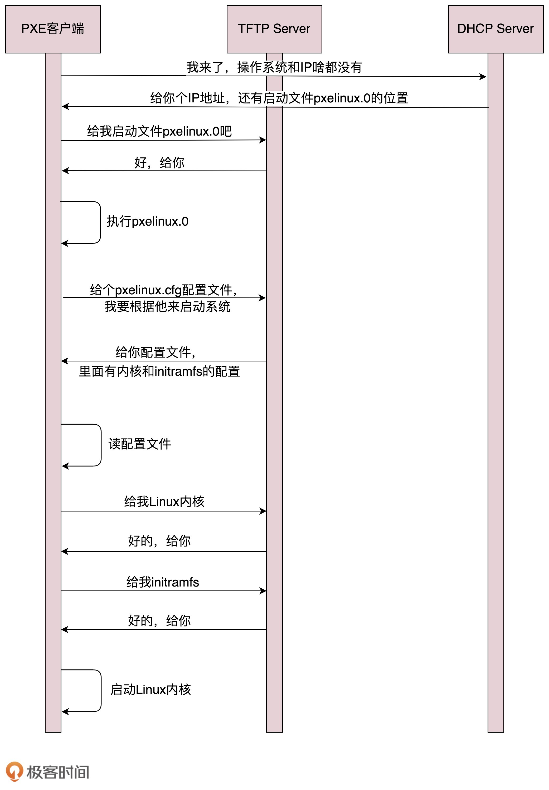

- 00 开篇词 想成为技术牛人？先搞定网络协议！.md.html
- 01 为什么要学习网络协议？.md.html
- 02 网络分层的真实含义是什么？.md.html
- 03 ifconfig：最熟悉又陌生的命令行.md.html
- 04 DHCP与PXE：IP是怎么来的，又是怎么没的？.md.html
- 05 从物理层到MAC层：如何在宿舍里自己组网玩联机游戏？.md.html
- 06 交换机与VLAN：办公室太复杂，我要回学校.md.html
- 07 ICMP与ping：投石问路的侦察兵.md.html
- 08 世界这么大，我想出网关：欧洲十国游与玄奘西行.md.html
- 09 路由协议：西出网关无故人，敢问路在何方.md.html
- 10 UDP协议：因性善而简单，难免碰到“城会玩”.md.html
- 11 TCP协议（上）：因性恶而复杂，先恶后善反轻松.md.html
- 12 TCP协议（下）：西行必定多妖孽，恒心智慧消磨难.md.html
- 13 套接字Socket：Talk is cheap, show me the code.md.html
- 14 HTTP协议：看个新闻原来这么麻烦.md.html
- 15 HTTPS协议：点外卖的过程原来这么复杂.md.html
- 16 流媒体协议：如何在直播里看到美女帅哥？.md.html
- 17 P2P协议：我下小电影，99%急死你.md.html
- 18 DNS协议：网络世界的地址簿.md.html
- 19 HttpDNS：网络世界的地址簿也会指错路.md.html
- 20 CDN：你去小卖部取过快递么？.md.html
- 21 数据中心：我是开发商，自己拿地盖别墅.md.html
- 22 VPN：朝中有人好做官.md.html
- 23 移动网络：去巴塞罗那，手机也上不了脸书.md.html
- 24 云中网络：自己拿地成本高，购买公寓更灵活.md.html
- 25 软件定义网络：共享基础设施的小区物业管理办法.md.html
- 26 云中的网络安全：虽然不是土豪，也需要基本安全和保障.md.html
- 27 云中的网络QoS：邻居疯狂下电影，我该怎么办？.md.html
- 28 云中网络的隔离GRE、VXLAN：虽然住一个小区，也要保护隐私.md.html
- 29 容器网络：来去自由的日子，不买公寓去合租.md.html
- 30 容器网络之Flannel：每人一亩三分地.md.html
- 31 容器网络之Calico：为高效说出善意的谎言.md.html
- 32 RPC协议综述：远在天边，近在眼前.md.html
- 33 基于XML的SOAP协议：不要说NBA，请说美国职业篮球联赛.md.html
- 34 基于JSON的RESTful接口协议：我不关心过程，请给我结果.md.html
- 35 二进制类RPC协议：还是叫NBA吧，总说全称多费劲.md.html
- 36 跨语言类RPC协议：交流之前，双方先来个专业术语表.md.html
- 37 知识串：用双十一的故事串起碎片的网络协议（上）.md.html
- 38 知识串：用双十一的故事串起碎片的网络协议（中）.md.html
- 39 知识串：用双十一的故事串起碎片的网络协议（下）.md.html
- 40 搭建一个网络实验环境：授人以鱼不如授人以渔.md.html
- 加餐1 创作故事：我是如何创作“趣谈网络协议”专栏的？.md.html
- 协议专栏特别福利 答疑解惑1期.md.html
- 协议专栏特别福利 答疑解惑2期.md.html
- 协议专栏特别福利 答疑解惑3期.md.html
- 协议专栏特别福利 答疑解惑4期.md.html
- 协议专栏特别福利 答疑解惑5期.md.html
- 结束语 放弃完美主义，执行力就是限时限量认真完成.md.html
- 捐赠
04 DHCP与PXE：IP是怎么来的，又是怎么没的？
上一节，我们讲了IP的一些基本概念。如果需要和其他机器通讯，我们就需要一个通讯地址，我们需要给网卡配置这么一个地址。
如何配置IP地址？
那如何配置呢？如果有相关的知识和积累，你可以用命令行自己配置一个地址。可以使用ifconfig，也可以使用ip addr。设置好了以后，用这两个命令，将网卡up一下，就可以开始工作了。
使用net-tools：
$ sudo ifconfig eth1 10.0.0.1/24
$ sudo ifconfig eth1 up
使用iproute2：
$ sudo ip addr add 10.0.0.1/24 dev eth1
$ sudo ip link set up eth1
你可能会问了，自己配置这个自由度太大了吧，我是不是配置什么都可以？如果配置一个和谁都不搭边的地址呢？例如，旁边的机器都是192.168.1.x，我非得配置一个16.158.23.6，会出现什么现象呢？
不会出现任何现象，就是包发不出去呗。为什么发不出去呢？我来举例说明。
192.168.1.6就在你这台机器的旁边，甚至是在同一个交换机上，而你把机器的地址设为了16.158.23.6。在这台机器上，你企图去ping192.168.1.6，你觉得只要将包发出去，同一个交换机的另一台机器马上就能收到，对不对？
可是Linux系统不是这样的，它没你想的那么智能。你用肉眼看到那台机器就在旁边，它则需要根据自己的逻辑进行处理。
还记得我们在第二节说过的原则吗？只要是在网络上跑的包，都是完整的，可以有下层没上层，绝对不可能有上层没下层。
所以，你看着它有自己的源IP地址16.158.23.6，也有目标IP地址192.168.1.6，但是包发不出去，这是因为MAC层还没填。
自己的MAC地址自己知道，这个容易。但是目标MAC填什么呢？是不是填192.168.1.6这台机器的MAC地址呢？
当然不是。Linux首先会判断，要去的这个地址和我是一个网段的吗，或者和我的一个网卡是同一网段的吗？只有是一个网段的，它才会发送ARP请求，获取MAC地址。如果发现不是呢？
Linux默认的逻辑是，如果这是一个跨网段的调用，它便不会直接将包发送到网络上，而是企图将包发送到网关。
如果你配置了网关的话，Linux会获取网关的MAC地址，然后将包发出去。对于192.168.1.6这台机器来讲，虽然路过它家门的这个包，目标IP是它，但是无奈MAC地址不是它的，所以它的网卡是不会把包收进去的。
如果没有配置网关呢？那包压根就发不出去。
如果将网关配置为192.168.1.6呢？不可能，Linux不会让你配置成功的，因为网关要和当前的网络至少一个网卡是同一个网段的，怎么可能16.158.23.6的网关是192.168.1.6呢？
所以，当你需要手动配置一台机器的网络IP时，一定要好好问问你的网络管理员。如果在机房里面，要去网络管理员那里申请，让他给你分配一段正确的IP地址。当然，真正配置的时候，一定不是直接用命令配置的，而是放在一个配置文件里面。不同系统的配置文件格式不同，但是无非就是CIDR、子网掩码、广播地址和网关地址。
动态主机配置协议（DHCP）
原来配置IP有这么多门道儿啊。你可能会问了，配置了IP之后一般不能变的，配置一个服务端的机器还可以，但是如果是客户端的机器呢？我抱着一台笔记本电脑在公司里走来走去，或者白天来晚上走，每次使用都要配置IP地址，那可怎么办？还有人事、行政等非技术人员，如果公司所有的电脑都需要IT人员配置，肯定忙不过来啊。
因此，我们需要有一个自动配置的协议，也就是动态主机配置协议（Dynamic Host Configuration Protocol），简称DHCP。
有了这个协议，网络管理员就轻松多了。他只需要配置一段共享的IP地址。每一台新接入的机器都通过DHCP协议，来这个共享的IP地址里申请，然后自动配置好就可以了。等人走了，或者用完了，还回去，这样其他的机器也能用。
所以说，如果是数据中心里面的服务器，IP一旦配置好，基本不会变，这就相当于买房自己装修。DHCP的方式就相当于租房。你不用装修，都是帮你配置好的。你暂时用一下，用完退租就可以了。
解析DHCP的工作方式
当一台机器新加入一个网络的时候，肯定一脸懵，啥情况都不知道，只知道自己的MAC地址。怎么办？先吼一句，我来啦，有人吗？这时候的沟通基本靠“吼”。这一步，我们称为DHCP Discover。
新来的机器使用IP地址0.0.0.0发送了一个广播包，目的IP地址为255.255.255.255。广播包封装了UDP，UDP封装了BOOTP。其实DHCP是BOOTP的增强版，但是如果你去抓包的话，很可能看到的名称还是BOOTP协议。
在这个广播包里面，新人大声喊：我是新来的（Boot request），我的MAC地址是这个，我还没有IP，谁能给租给我个IP地址！
格式就像这样：

如果一个网络管理员在网络里面配置了DHCP Server的话，他就相当于这些IP的管理员。他立刻能知道来了一个“新人”。这个时候，我们可以体会MAC地址唯一的重要性了。当一台机器带着自己的MAC地址加入一个网络的时候，MAC是它唯一的身份，如果连这个都重复了，就没办法配置了。
只有MAC唯一，IP管理员才能知道这是一个新人，需要租给它一个IP地址，这个过程我们称为DHCP Offer。同时，DHCP Server为此客户保留为它提供的IP地址，从而不会为其他DHCP客户分配此IP地址。
DHCP Offer的格式就像这样，里面有给新人分配的地址。

DHCP Server仍然使用广播地址作为目的地址，因为，此时请求分配IP的新人还没有自己的IP。DHCP Server回复说，我分配了一个可用的IP给你，你看如何？除此之外，服务器还发送了子网掩码、网关和IP地址租用期等信息。
新来的机器很开心，它的“吼”得到了回复，并且有人愿意租给它一个IP地址了，这意味着它可以在网络上立足了。当然更令人开心的是，如果有多个DHCP Server，这台新机器会收到多个IP地址，简直受宠若惊。
它会选择其中一个DHCP Offer，一般是最先到达的那个，并且会向网络发送一个DHCP Request广播数据包，包中包含客户端的MAC地址、接受的租约中的IP地址、提供此租约的DHCP服务器地址等，并告诉所有DHCP Server它将接受哪一台服务器提供的IP地址，告诉其他DHCP服务器，谢谢你们的接纳，并请求撤销它们提供的IP地址，以便提供给下一个IP租用请求者。

此时，由于还没有得到DHCP Server的最后确认，客户端仍然使用0.0.0.0为源IP地址、255.255.255.255为目标地址进行广播。在BOOTP里面，接受某个DHCP Server的分配的IP。
当DHCP Server接收到客户机的DHCP request之后，会广播返回给客户机一个DHCP ACK消息包，表明已经接受客户机的选择，并将这一IP地址的合法租用信息和其他的配置信息都放入该广播包，发给客户机，欢迎它加入网络大家庭。

最终租约达成的时候，还是需要广播一下，让大家都知道。
IP地址的收回和续租
既然是租房子，就是有租期的。租期到了，管理员就要将IP收回。
如果不用的话，收回就收回了。就像你租房子一样，如果还要续租的话，不能到了时间再续租，而是要提前一段时间给房东说。DHCP也是这样。
客户机会在租期过去50%的时候，直接向为其提供IP地址的DHCP Server发送DHCP request消息包。客户机接收到该服务器回应的DHCP ACK消息包，会根据包中所提供的新的租期以及其他已经更新的TCP/IP参数，更新自己的配置。这样，IP租用更新就完成了。
好了，一切看起来完美。DHCP协议大部分人都知道，但是其实里面隐藏着一个细节，很多人可能不会去注意。接下来，我就讲一个有意思的事情：网络管理员不仅能自动分配IP地址，还能帮你自动安装操作系统！
预启动执行环境（PXE）
普通的笔记本电脑，一般不会有这种需求。因为你拿到电脑时，就已经有操作系统了，即便你自己重装操作系统，也不是很麻烦的事情。但是，在数据中心里就不一样了。数据中心里面的管理员可能一下子就拿到几百台空的机器，一个个安装操作系统，会累死的。
所以管理员希望的不仅仅是自动分配IP地址，还要自动安装系统。装好系统之后自动分配IP地址，直接启动就能用了，这样当然最好了！
这事儿其实仔细一想，还是挺有难度的。安装操作系统，应该有个光盘吧。数据中心里不能用光盘吧，想了一个办法就是，可以将光盘里面要安装的操作系统放在一个服务器上，让客户端去下载。但是客户端放在哪里呢？它怎么知道去哪个服务器上下载呢？客户端总得安装在一个操作系统上呀，可是这个客户端本来就是用来安装操作系统的呀？
其实，这个过程和操作系统启动的过程有点儿像。首先，启动BIOS。这是一个特别小的小系统，只能干特别小的一件事情。其实就是读取硬盘的MBR启动扇区，将GRUB启动起来；然后将权力交给GRUB，GRUB加载内核、加载作为根文件系统的initramfs文件；然后将权力交给内核；最后内核启动，初始化整个操作系统。
那我们安装操作系统的过程，只能插在BIOS启动之后了。因为没安装系统之前，连启动扇区都没有。因而这个过程叫做预启动执行环境（Pre-boot Execution Environment），简称PXE。
PXE协议分为客户端和服务器端，由于还没有操作系统，只能先把客户端放在BIOS里面。当计算机启动时，BIOS把PXE客户端调入内存里面，就可以连接到服务端做一些操作了。
首先，PXE客户端自己也需要有个IP地址。因为PXE的客户端启动起来，就可以发送一个DHCP的请求，让DHCP Server给它分配一个地址。PXE客户端有了自己的地址，那它怎么知道PXE服务器在哪里呢？对于其他的协议，都好办，要有人告诉他。例如，告诉浏览器要访问的IP地址，或者在配置中告诉它；例如，微服务之间的相互调用。
但是PXE客户端启动的时候，啥都没有。好在DHCP Server除了分配IP地址以外，还可以做一些其他的事情。这里有一个DHCP Server的一个样例配置：
ddns-update-style interim;
ignore client-updates;
allow booting;
allow bootp;
subnet 192.168.1.0 netmask 255.255.255.0
{
option routers 192.168.1.1;
option subnet-mask 255.255.255.0;
option time-offset -18000;
default-lease-time 21600;
max-lease-time 43200;
range dynamic-bootp 192.168.1.240 192.168.1.250;
filename "pxelinux.0";
next-server 192.168.1.180;
}
按照上面的原理，默认的DHCP Server是需要配置的，无非是我们配置IP的时候所需要的IP地址段、子网掩码、网关地址、租期等。如果想使用PXE，则需要配置next-server，指向PXE服务器的地址，另外要配置初始启动文件filename。
这样PXE客户端启动之后，发送DHCP请求之后，除了能得到一个IP地址，还可以知道PXE服务器在哪里，也可以知道如何从PXE服务器上下载某个文件，去初始化操作系统。
解析PXE的工作过程
接下来我们来详细看一下PXE的工作过程。
首先，启动PXE客户端。第一步是通过DHCP协议告诉DHCP Server，我刚来，一穷二白，啥都没有。DHCP Server便租给它一个IP地址，同时也给它PXE服务器的地址、启动文件pxelinux.0。
其次，PXE客户端知道要去PXE服务器下载这个文件后，就可以初始化机器。于是便开始下载，下载的时候使用的是TFTP协议。所以PXE服务器上，往往还需要有一个TFTP服务器。PXE客户端向TFTP服务器请求下载这个文件，TFTP服务器说好啊，于是就将这个文件传给它。
然后，PXE客户端收到这个文件后，就开始执行这个文件。这个文件会指示PXE客户端，向TFTP服务器请求计算机的配置信息pxelinux.cfg。TFTP服务器会给PXE客户端一个配置文件，里面会说内核在哪里、initramfs在哪里。PXE客户端会请求这些文件。
最后，启动Linux内核。一旦启动了操作系统，以后就啥都好办了。

小结
好了，这一节就到这里了。我来总结一下今天的内容：
DHCP协议主要是用来给客户租用IP地址，和房产中介很像，要商谈、签约、续租，广播还不能“抢单”；
DHCP协议能给客户推荐“装修队”PXE，能够安装操作系统，这个在云计算领域大有用处。
最后，学完了这一节，给你留两个思考题吧。
- PXE协议可以用来安装操作系统，但是如果每次重启都安装操作系统，就会很麻烦。你知道如何使得第一次安装操作系统，后面就正常启动吗？
- 现在上网很简单了，买个家用路由器，连上WIFI，给DHCP分配一个IP地址，就可以上网了。那你是否用过更原始的方法自己组过简单的网呢？说来听听。
欢迎你留言和我讨论。趣谈网络协议，我们下期见！
© 2019 - 2023 Liangliang Lee. Powered by gin and hexo-theme-book.